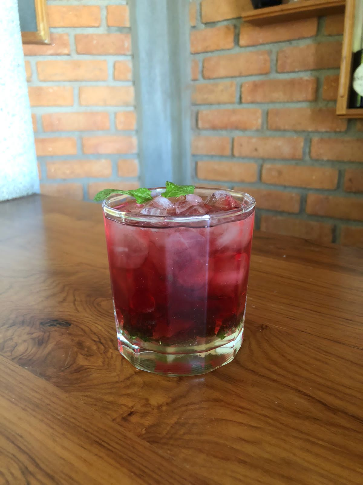

Tequila
El tequila es una bebida alcohólica obtenida del destilado, originaria de Tequila, en el estado de Jalisco, México. Se elabora a partir de la fermentación y destilado —al igual que el mezcal— del jugo extraído del agave, en particular el llamado "Agave Azul" (Agave tequilana, variedad Azul),12 con denominación de origen en cuatro estados de México, Guanajuato, Michoacán, Tamaulipas y Jalisco ya que en los dos primeros solo se puede producir en algunos municipios, (los fronterizos a Jalisco).
Paloma - Jaibol. (Se escarcha el limón en la orilla del vaso y le echas un poco de sal, golpeas al vaso para quitar el exceso de sal).
- Hielo a tope.
- Jugo de 1 limón.
- 2 oz de tequila.
- Pizca de sal.
- Pizca de azúcar.
- Refresco de toronja.
Sunrise - Jaibol, Copa Tulipán.
- Hilo a tope.
- 2 oz de tequila.
- Jugo de naranja.
- ½ oz granadina (Se agrega en la orilla).
Limonada eléctrica – Jaibol.
- Hielo a tope.
- ½ oz jarabe natural.
- ½ oz curasao.
- Jugo de 1 limón.
- 1 ½ oz tequila.
- Refresco lima-limón.
Iguana - jaibol.
- Hielo a tope.
- ½ oz jarabe natural.
- 1 oz licor de melón.
- Jugo de 1 limón.
- 1 ½ oz tequila.
- Refresco lima-limón.
Vampiro – jaibol.
- Hielo a tope.
- Dash de salsa inglesa, magui, tabasco (salpicar 3 veces).
- Jugo de 1 limón.
- ½ oz salsa valentina.
- 1 ½ o 2 oz de tequila.
- Clamato complemento.
Margarita (elaborada con shaker) – copa margarita (Escarchado con limón, sal y azúcar la misma porción).
- Hielo shaker suficiente(a la mitad).
- 1oz triple sec.
- 1 oz Controy.
- 1 oz Jarabe natural.
- 1 ½ oz tequila.
- Jugo de 1 limón.

Blue margarita (elaborada con shaker) – copa margarita (Escarchado con limón, sal y azúcar la misma porción).
- Hielo shaker suficiente(a la mitad).
- 1oz triple sec.
- 1 oz Controy.
- 1 oz Jarabe natural.
- 1 ½ oz tequila.
- Jugo de 1 limón.
- ½ oz Curasao.
Green margarita (elaborada con shaker) – copa margarita (Escarchado con limón, sal y azúcar la misma porción).
- Hielo shaker suficiente(a la mitad).
- 1oz triple sec.
- 1 oz Controy.
- 1 oz Jarabe natural.
- 1 ½ oz tequila.
- Jugo de 1 limón.
- ½ oz de licor de melón o licor de menta.
Vodka
Astronauta.
- Shot de vodka con un limón escarchado en una cada cara café y en la otra azúcar.
Desarmador – Jaibol.
- Hielo a tope.
- 2 oz de vodka.
- Jugo de naranja a tope.
- ½ oz granadina.
Ruso negro – old fashion.
- Hielo a tope.
- 2oz de vodka.
- Jugo de 1 limón.
- Complementar con coca – cola.
- ½ oz licor de café.

Ruso Blanco – Old fashion.
- Hielo a tope.
- 2oz Vodka.
- ½ oz licor de café.
- ½ oz jarabe natural.
- Complementar con leche carneshion(Leche evaporada). Agregar en los hielos.
Cosmopolitan – jaibol.
- Suficiente hielo.
- ½ oz jarabe natural.
- El jugo de 1 limón.
- 1 ½ oz Vodka.
- Complementar con jugo de arándano.
Cosmopolitan – Copa martini(Shaker).
- Hielo a la mitad
- ½ oz jarabe natural.
- El jugo de 1 limón.
- 1 ½ oz Vodka.
- 4 oz de jugo de arándano.
Iguana Frozen – jaibol.
- ½ oz jarabe natural.
- ½ oz licor de melón.
- Jugo de 1 limón.
- 1 ½ oz vodka.
- Refresco de lima-limón o agua mineral.
- ½ oz de Curasao.
Bloody Mary – Jaibol.
- Hielo a tope.
- Dash salsa inglesa, magui y tabasco (salpicar 3 veces).
- Jugo de 1 limón.
- ½ oz Valentina.
- 1 ½ oz Vodka.
- Clamato complementar.
Sex on the beach – Copa tulipán.
- Hielo a tope.
- ½ oz jarabe natural.
- 1 oz licor de Durazno.
- 1 ½ oz Vodka.
- Jugo de Durazno y jugo de arándano.
- Dash de granadina (sobre los hielos).
Ron
Cuba libre – jaibol(Twist de limón adentro).
- ½ oz jarabe natural.
- 1 limón partido en cuatro, metemos los pedazos al vaso y machacamos.
- Agregamos hielo a tope.
- 1 ½ oz Ron.
- Complementemos con Coca-cola.
Quemada – Jaibol(No se debe mezclar el limón y la Coca-cola).
- Hielo a tope.
- Exprimimos limones hasta tener la mitad del vaso de jugo.
- 1oz de ron.
- Complementar con Coca-cola.
Se toma sin mezclar y despacio hasta que solo quede una franja de Coca-cola se toma todo.
Shot turquesa – percheron.
Shaker( 3 movimientos).
- 1 ½ oz ron.
- ½ oz crema de coco (Calahua).
- 1 oz jugo de piña (jugo de durazno o piña).
- 1 oz curacao.
Between the sheets – copa martini(rodaja de naranja o limón).
- 1 ½ oz ron.
- 1 oz triple sec.
- 1 oz controy.
- Jugo de 2 limones.
- 1 ½ oz jugo de durazno.
Mojito tradicional – old fashion.
- ½ oz jarabe natural.
- 6 o 5 hojas de hierba buena y machacar hasta destruir dentro del vaso.
- Hielo a tope.
- Jugo de 1 limón.
- 1 ½ oz ron.
- Complementamos con agua mineral o refresco lima-limón.

Mojito azul – old fashion(Blueberries).
- ½ oz jarabe natural.
- 6 o 5 hojas de hierbabuena y machacar hasta destruir dentro del vaso.
- Hielo a tope.
- Jugo de 1 limón.
- 1 ½ oz ron.
- Complementamos con agua mineral o refresco lima-limón.
- ½ oz curasao.
Mojito rojo – old fashion(arandanos, fresas).
- ½ oz jarabe natural.
- 6 o 5 hojas de hierba buena y machacar hasta destruir dentro del vaso.
- Hielo a tope.
- Jugo de 1 limón.
- 1 ½ oz ron.
- Complementamos con jugo de arandanos.

Caipirinhia – old fashion.
- ½ oz jarabe natural o azúcar morena.
- Agregamos media lima partida en 4 partes.
- ½ limón.
- Machacamos.
- Hielo a tope.
- 1 ½
- Complementamos con agua mineral o agua tónica.
Piña colada – copa tulipán (Shaker).
- Hielo a mitad.
- 2 oz crema de coco.
- 1 oz lechera.
- 2 oz Carnation.
- 1 ½ oz ron.
- 4 oz jugo de piña.
- 1 pisca de canela en polvo.
Piña colada – copa tulipán (licuadora).
- 2 oz crema de coco.
- 1 oz lechera.
- 2 oz Carnation.
- 1 ½ oz ron.
- 4 oz jugo de piña.
- 1 pisca de canela en polvo.
- Licuar.
- Servir en un vaso con hielo a tope.
Libertador – Copa margarita (shaker).
- Hielo a la mitad.
- ½ oz jarabe natural.
- Jugo de limón.
- 1 ½ oz licor de cereza.
- 1 ½ oz ron.
- 4 oz jugo de naranja.
Mai-tai – Jaibol(Shaker).
- Hielo a la mitad.
- 2 oz ron.
- 1 oz Controy.
- 1 z Jarabe natural.
- Jugo de 1 limón.
- 1oz granadina.
Daiquiri – Copa martini.
- 2oz ron.
- Jugo de 1 limón.
- 1 oz Jarabe natural.
- 3 oz jugo de piña (fresa o naranja).
Shot(extra).
- 1 oz ron.
- 1 oz licor de cereza.
- 1 oz leche evaporada.
Shot tropical - 6 tequileros (Shaker).
- shaker
- Hielo a tope.
- 1 oz o de granadina.
- Mezclar en otro recipiente.
- 3 oz de jugo de durazno o naranja.
- 1 ½ oz jarabe natural.
- Agregar suavemente.
- 2 oz jugo suavemente.
- Mezclar en otro recipiente.
- 1 oz Curasao.
- 1 ½ oz alcohol.
- Servir en shots con colador strainer.
Shot Bandera – 6 shots.
- En un shot Licor.
- En un shot destilado.
- En un shot Licor.
- En un shot destilado.
- En un shot Licor.
- En un shot destilado.